Equations of Lines and Planes in Space#
Lines in Space#
A line in three-dimensions can be constructed by setting a starting point and then moving from that point any multiple of a fixed direction vector. For example, in the image below we constructed a line by starting at the blue point and then moved all multiples of the red vector.
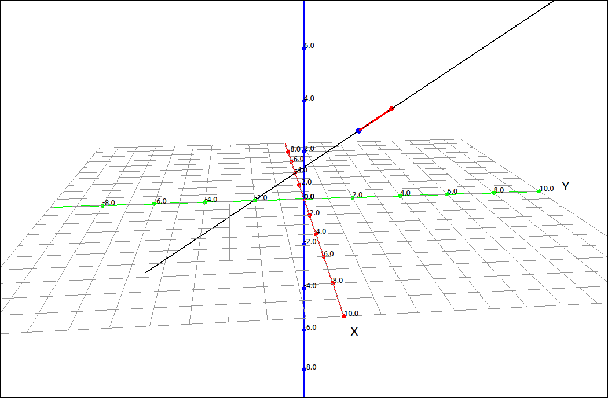
Lines in Space#
Specifically, we chose a starting point (which can be thought of as a vector) \(\mathbf{r}_0 = (x_0, y_0, z_0)\) and a direction vector \(\mathbf{v} = (a, b, c)\), then every point on the line is \(\mathbf{r} = (x, y, z)\) where \(\mathbf{r} = \mathbf{r}_0 + t \mathbf{v}\) for all values of \(t.\)
Definition: Vector Equation of a Line
Given a starting point \(\mathbf{r}_0 = (x_0, y_0, z_0)\) and a direction vector \(\mathbf{v} = (a, b, c)\), the vector equation of a line through \(\mathbf{r}_0\) in the direction of \(\mathbf{v}\) is
Continuing this derivation,
This produces the three equations,
These equations are the parametric form for the equation of a line.
Definition: Parametric Equations of a Line
Given a starting point \(\mathbf{r}_0 = (x_0, y_0, z_0)\) and a direction vector \(\mathbf{v} = (a, b, c)\), the parametric equations of a line through \(\mathbf{r}_0\) in the direction of \(\mathbf{v}\) is
One final form for the equation of a line in space is the symmetric equation which is derived by solving the parametric equation for t.
Then setting these equal to each other,
Definition: Symmetric Equation of a Line
Given a starting point \(\mathbf{r}_0 = (x_0, y_0, z_0)\) and a direction vector \(\mathbf{v} = (a, b, c)\), the symmetric equation of a line through \(\mathbf{r}_0\) in the direction of \(\mathbf{v}\) is
Example: Lines in 3-D#
In this example we will construct a line through the point \((1, 2, 3)\) in the direction of \((1, 1, 1).\)
GeoGebra#
Make sure that the perspective is 3D graphics. Input the point with (1, 2, 3) this should come in as A. Now input the vector Vector(1, 1, 1), this should come in as u. To crate the line simply input A + t u. The result should look like,
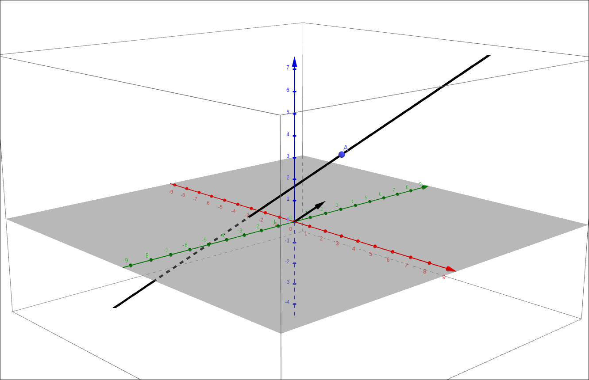
Lines in Space#
CLAE#
In CLAE there are a number of ways to create a line in three-dimensions. Using the definition, input the two vectors (1, 2, 3) and (1, 1, 1), assuming that these come in as R1 and R2 respectively, input R1 + t*R2. The result should be,
If we click and drag this over to tbe 3D graphics tab we get.
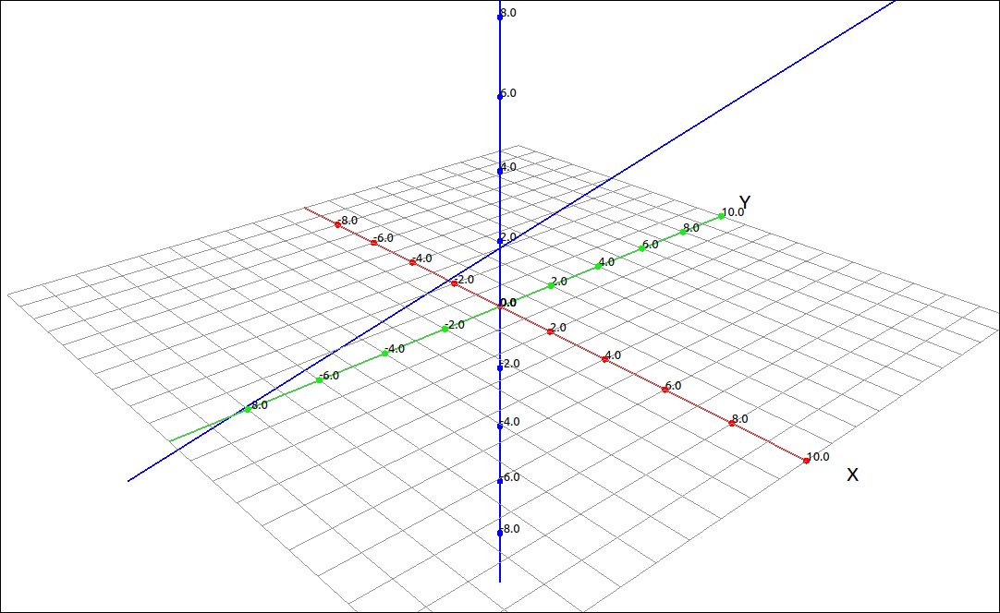
Lines in Space#
Example: Lines Between Two Points#
Creating a line between two points is fairly straightforward. To create a line segment between two points \(\mathbf{p}_1\) and \(\mathbf{p}_2\) we can create the expression,
as \(0 \leq t \leq 1.\) We can also create the entire line by allowing t to range over all the real numbers.
GeoGebra#
Input the two points (1, 2, 3) and (-2, 3, 1), we will assume these came in as A and B respectively. Now input the expression (1-t) A + t B the result should look like,
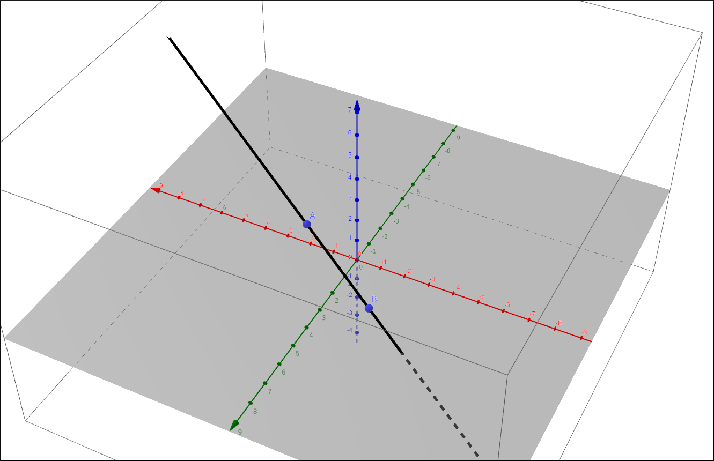
Line Between Two Points#
CLAE#
Input the two vectors (points) (1, 2, 3) and (-2, 3, 1), we will assume these came in as R1 and R2 respectively.
Now input the expression (1-t) * R1 + t * R2 the result should be,
If we click and drag these three expressions to the 3D graphics window we get,
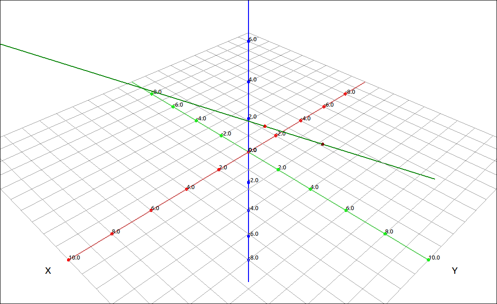
Line Between Two Points#
Planes#
As with lines, we can create a plane in space in a number of ways. One possibility is to take three non-collinear points. We will look at this later but there is a better way for constructing equations that represent a plane. One is to define a plane as the set of all points such that the vector between any two distinct points is orthogonal to a fixed vector \(\mathbf{n}.\) The vector \(\mathbf{n}\) is called the normal vector for the plane.
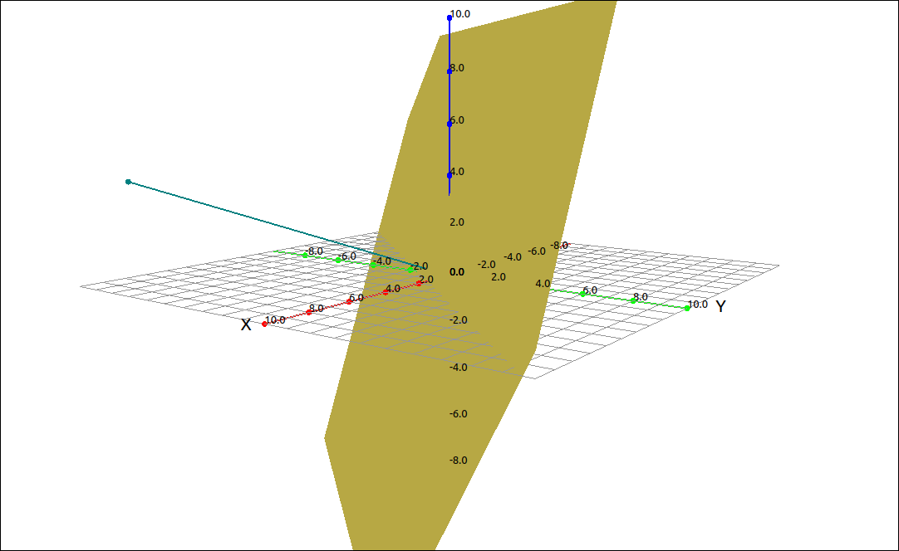
Plane with Normal Vector#
Definition: Equations of a Plane
Given a point P on the plane and a normal vector \(\mathbf{n}\) to the plane then the plane is the set of all points Q such that,
This is the vector equation to a plane. If we let \(\mathbf{n} = (a, b, c)\), \(P = (x_0, y_0, z_0)\), and \(Q = (x, y, z)\) then this equation becomes,
This is called the scalar equation of a plane. Finally if we expand this equation we get
where \(d = - (ax_0 + by_0 +cz_0).\) This is called the general form of the equation of a plane.
Example: Planes#
CLAE#
We will create the plane with normal vector (1, 2, 3) and through the point (-2, 3, 1). Input the two vectors (points) (1, 2, 3) and (-2, 3, 1), we will assume these came in as R1 and R2 respectively. Also input a general point (vector) x, y, z, we will assume this is R3. Input R3-R2, this should return,
Now select this vector, select Vector > Dot Product then select R1 from the list. The result should be,
meaning the general form equation,
or equivalently,
If we click and drag this expression to the 3D graphics window we get,
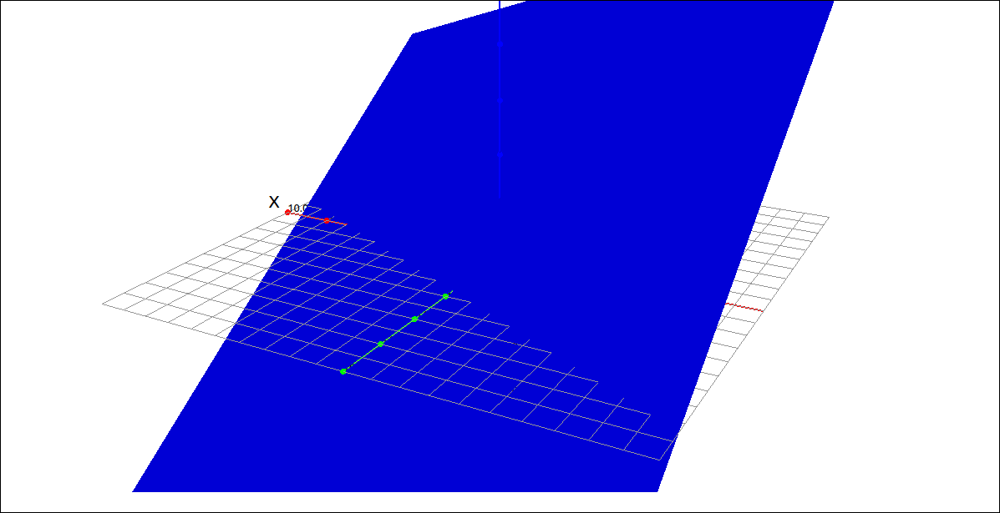
Plane Example#
Graphing it along with the normal vector produces,
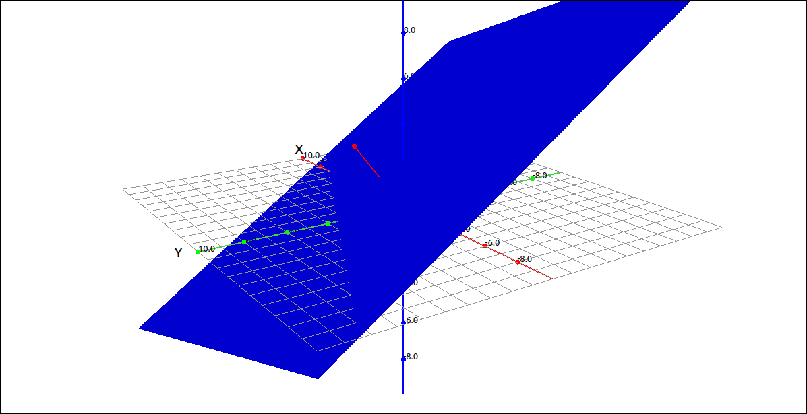
Plane Example with Normal Vector#
Example: Plane Through Three Points#
To find the equation of a plane through three non-collinear points,
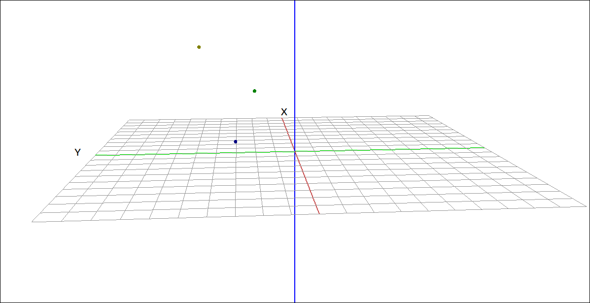
Three Points#
Form two vectors from the three points.
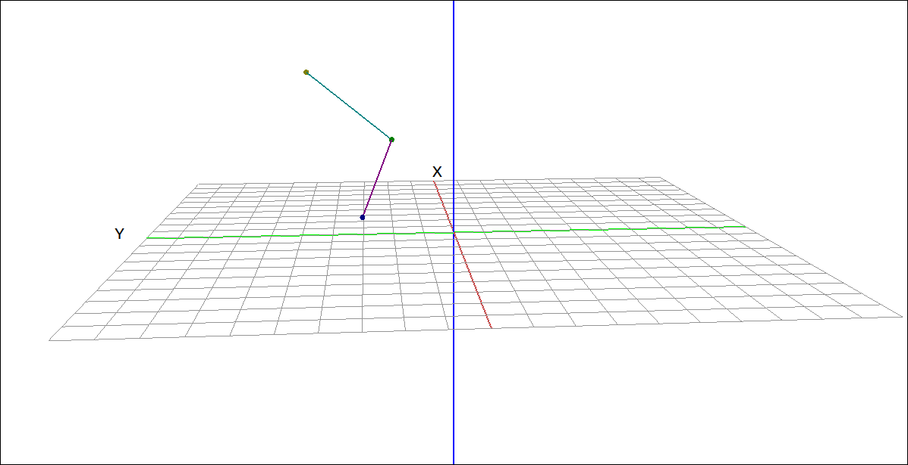
Three Points to Two Vectors#
Take the cross product of these two vectors to get a normal vector.
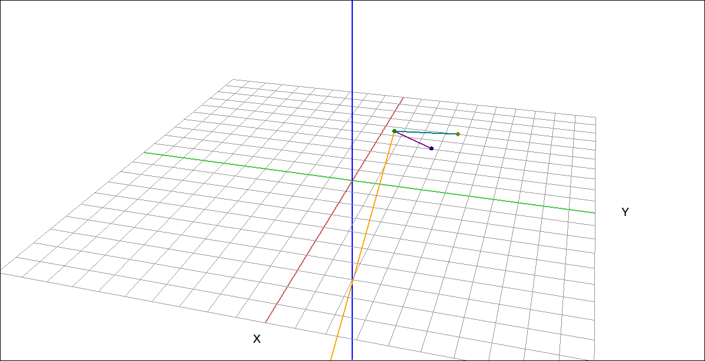
Cross Product#
Use any of the three points and the normal vector to produce the equation of the plane.
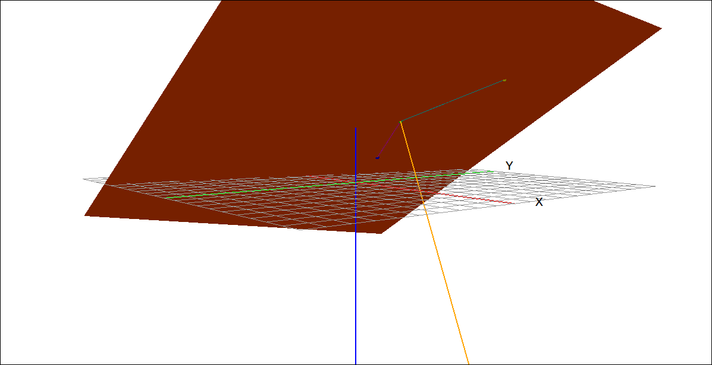
Plane Through Three Points#
GeoGebra#
GeoGebra does not allow us to follow this entire process through but it has a command that will do the entire process and produce the resulting plane. First input the points, (1, 2, 3), (-2, 3, 1), and (5, 5, 5). We will assume that these came in as A, B, and C respectively. The result is below,
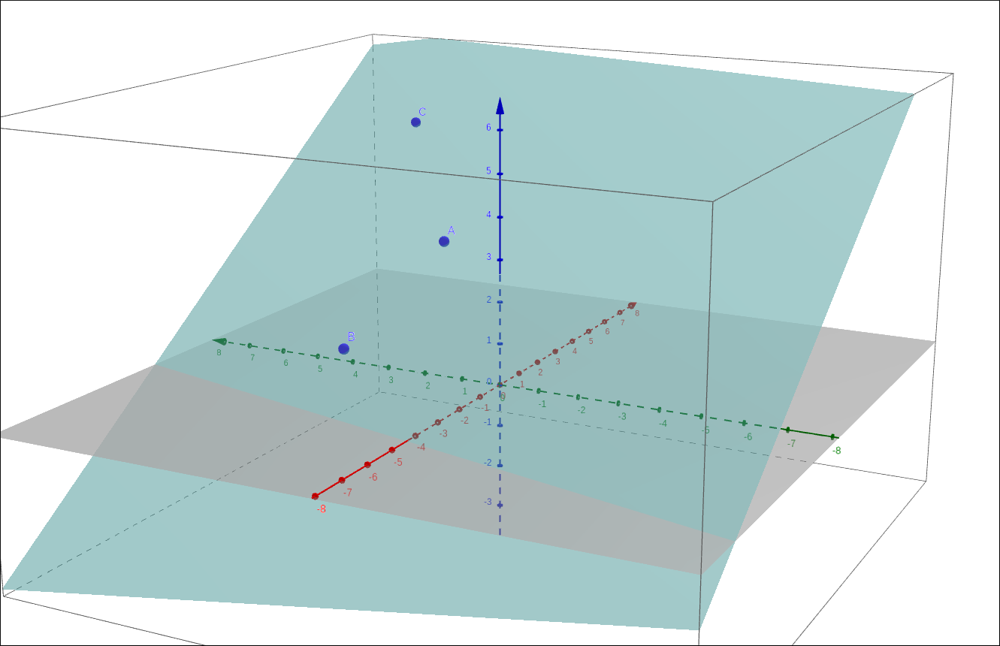
Plane Through Three Points#
CLAE#
CLAE also has a built-in tool for this but we can also follow the process through as we would do it by hand. We will use both methods in this example.
First we will do the entire process, input the points (vectors), (1, 2, 3), (-2, 3, 1), and (5, 5, 5). We will assume that these came in as R1, R2, and R3 respectively.
Form the two vectors by inputting
R2-R1andR3-R1into the CAS, the results areR4andR5,
Take the cross product of these two vectors to get a normal vector,
R6.
Input a generic vector
(x, y, z),R7. InputR7-R1and then take the dot product of this withR6. The final result is
Plotting this along with the original three points gives us,
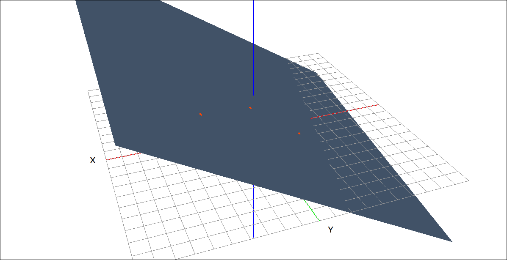
Plane Through Three Points#
CLAE also has this built into its menu system. First we need to construct a matrix that has the points R1, R2, and R3 as columns. There are a number of ways we can do this, here is one of them. Select Edit > Join Matrices > Multiple Row Join, in the input box of the dialog that appears input R1 R2 R3 and click OK. The result is the matrix,
Now select, Vector > Lines and Planes > Plane Containing Three Points. A dialog box will appear asking you what form of output you would like, keep this set to the general form and click OK. The result is
Intersections#
Lines#
In two dimensions, two straight lines are either parallel or they intersect. If they intersect then it can be at a single point or they could coincide. In three dimensions the lines could be parallel, coincide, intersect at a single point, or be skew, that is, not intersecting and not parallel.
These four possibilities can be characterized as follows.
The lines have the same direction vector and share at least one point, implies that the lines coincide.
The lines have the same direction vector and share no points, implies that the lines are parallel.
The lines have different direction vectors and share at least one point, implies that the lines intersect in a single point.
The lines have different direction vectors and share no points, implies that the lines are skew.
Example: Lines in Space#
In this example we will classify the following three sets of lines,
\((2t-1, t-1, t-4)\) and \((t-3, 3t+8, 5-2t)\).
\((t, -t, t)\) and \((2t+3, t, t+2)\).
\((6t-1, -2t, 3t+1)\) and \((6t+4, -2t-3, 3t+1)\).
GeoGebra#
Input the two lines,
(2t-1, t-1, t-4)
(t-3, 3t+8, 5-2t)
Graphing these it appears that the lines are skew.
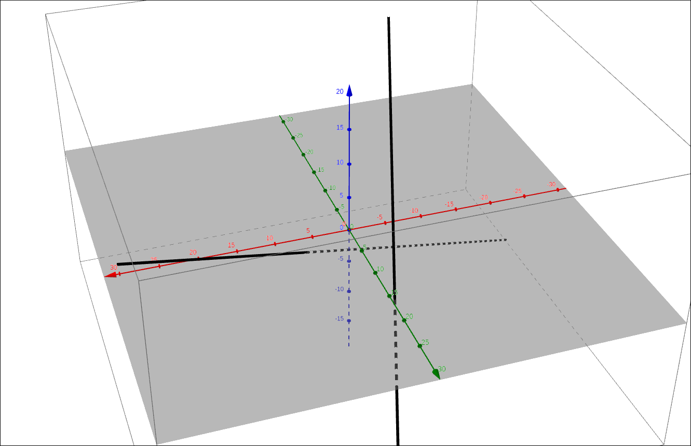
Line Classification #1#
Looking at this algebraically, the first line has direction vector \((2, 1, 1)\) and the second line has direction vector \((1, 3, -2).\) So the lines are not parallel nor do they coincide, they are either intersecting or they are skew. To determine if they intersect, select the intersect tool in the point menu. Then click on each of the two lines, one at a time. GeoGebra will create am intersect command for the intersection but the result should be ?. This means that either there is no intersection or GeoGebra cannot do the calculation. Since this is a fairly simpple computation we can safely assume that there is no intersection point and the lines are skew.
Input the two lines,
(t, -t, t)
(2t+3, t, t+2)
Graphing these it appears that the lines intersect.
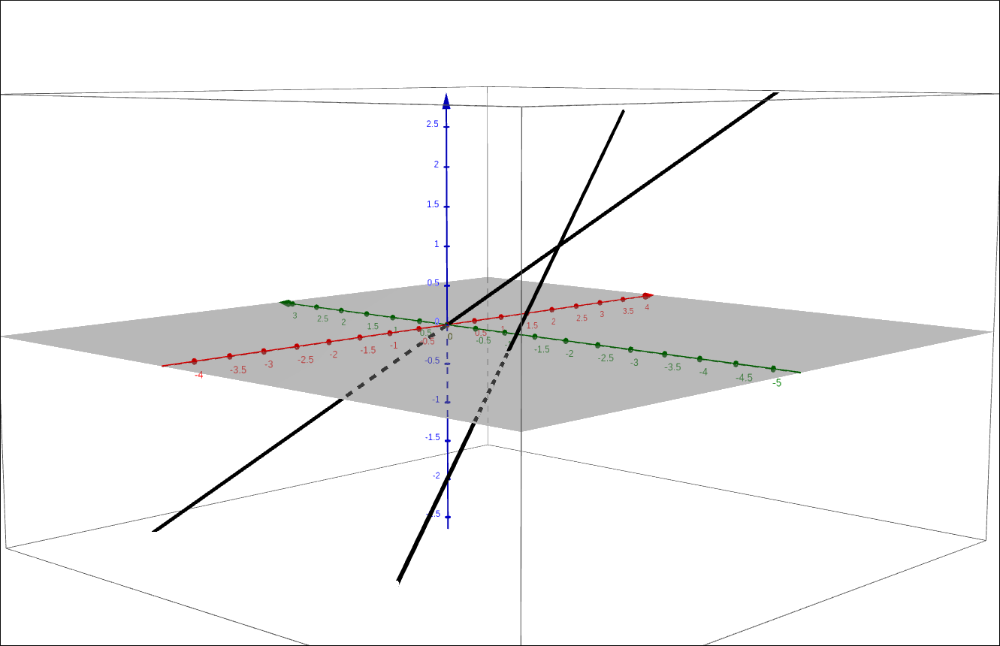
Line Classification #2#
Looking at this algebraically, the first line has direction vector \((1, -1, 1)\) and the second line has direction vector \((2, 1, 1).\) So the lines are not parallel nor do they coincide, they are either intersecting or they are skew. To determine if they intersect, select the intersect tool in the point menu. Then click on each of the two lines, one at a time. GeoGebra will create am intersect command for the intersection and the result is \((1, -1, 1)\). Thus the lines intersect in a singe point, \((1, -1, 1)\).
Input the two lines,
(6t-1, -2t, 3t+1)
(6t+4, -2t-3, 3t+1)
Graphing these it appears that the lines are parallel.
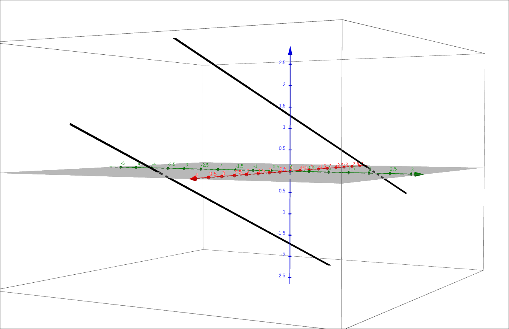
Line Classification #3#
Looking at this algebraically, the they both have the same direction vector \((6, -2, 3)\), so the lines are either parallel or they coincide. Graphically it is clear that they do not coincide, nonetheless, taking an algebraic approach to this select the intersect tool in the point menu. Then click on each of the two lines, one at a time. GeoGebra will create am intersect command for the intersection and the result is ?. Thus the lines are parallel.
CLAE#
Input the two lines, input these in the vector input dialog,
(2*t-1, t-1, t-4)
(t-3, 3*t+8, 5-2*t)
Graphing these it appears that the lines are skew.
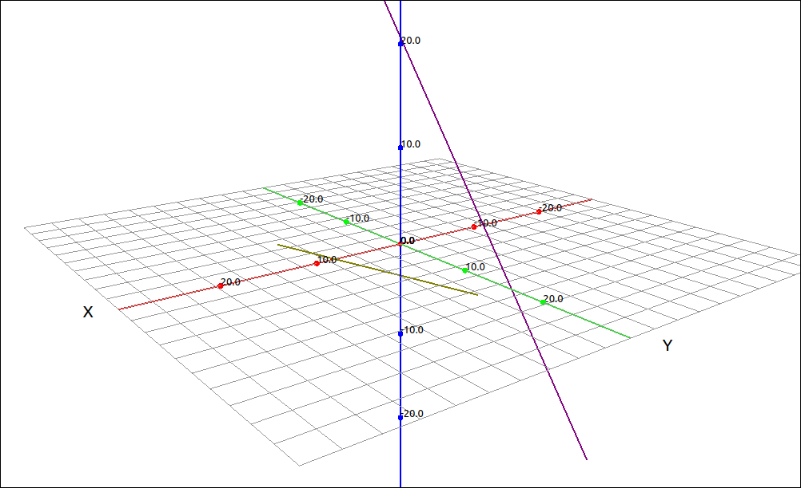
Line Classification #1#
Looking at this algebraically, the first line has direction vector \((2, 1, 1)\) and the second line has direction vector \((1, 3, -2).\) So the lines are not parallel nor do they coincide, they are either intersecting or they are skew. To determine if they intersect, we need to solve a set of equations for x, y, and z. To do this we need to change the variable of one of the two lines. Select the second line, then select Algebra > Evaluate, leave the t as the variable and input s for the expression. This will create a new vector with s replacing t. Now subtract the first vector from this new one, the result should be,
If there are values for s and t that make all three of these 0 at the same time then we have a point of intersection. Select Algebra > Solve, a dialog box will come up asking what to solve for and the program should already have this populated with [s, t], just click OK. The result is [] which means that there are no solutions and hence there are no points of intersection, thus the lines are skew.
Input the two lines, input these in the vector input dialog,
(t, -t, t)
(2*t+3, t, t+2)
Graphing these it appears that the lines intersect.
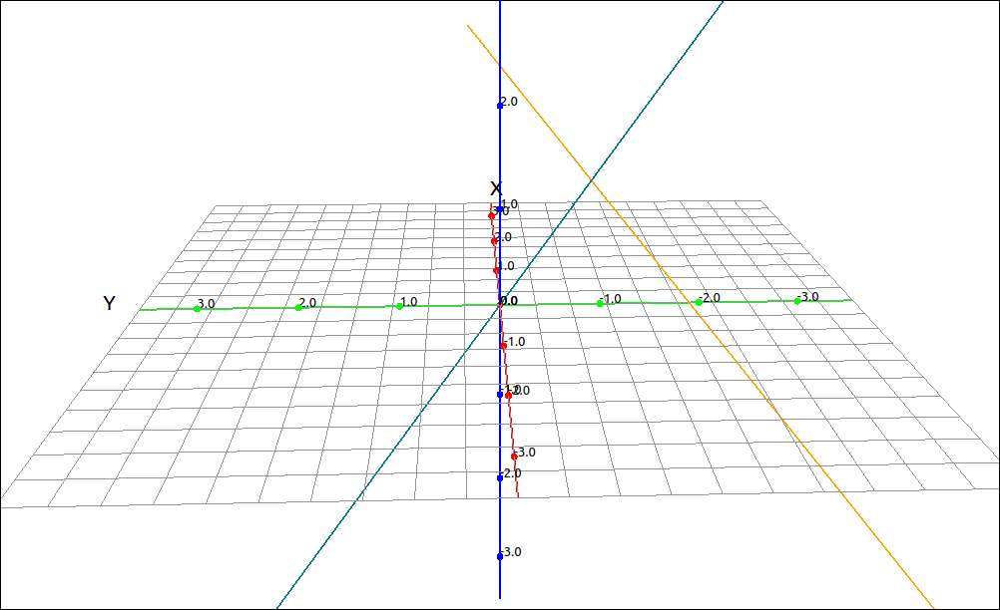
Line Classification #2#
Looking at this algebraically, the first line has direction vector \((1, -1, 1)\) and the second line has direction vector \((2, 1, 1).\) So the lines are not parallel nor do they coincide, they are either intersecting or they are skew. To determine if they intersect, we need to solve a set of equations for x, y, and z. To do this we need to change the variable of one of the two lines. Select the second line, then select Algebra > Evaluate, leave the t as the variable and input s for the expression. This will create a new vector with s replacing t. Now subtract the first vector from this new one, the result should be,
If there are values for s and t that make all three of these 0 at the same time then we have a point of intersection. Select Algebra > Solve, a dialog box will come up asking what to solve for and the program should already have this populated with [s, t], just click OK. The result is {s: -1, t: 1} which means that there is a solution \(s = -1\) and \(t = 1\). Substituting \(t = 1\) into the first vector gives us the point \((1, -1, 1)\). Thus the lines intersect in a singe point, \((1, -1, 1)\).
Input the two lines, input these in the vector input dialog,
(6*t-1, -2*t, 3*t+1)
(6*t+4, -2*t-3, 3*t+1)
Graphing these it appears that the lines are parallel.
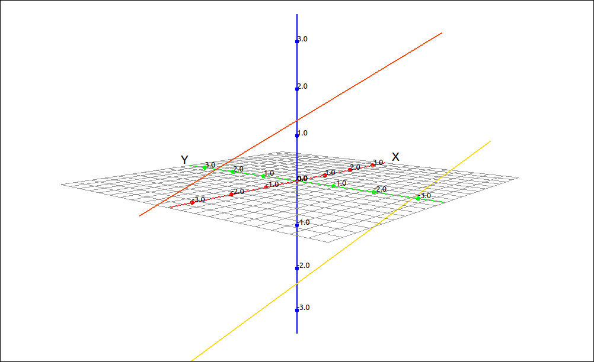
Line Classification #3#
Looking at this algebraically, the they both have the same direction vector \((6, -2, 3)\), so the lines are either parallel or they coincide. Graphically it is clear that they do not coincide, nonetheless, taking an algebraic approach to this. Follow the same process as we did above and the solutions will again be empty []. Thus the lines are parallel.
Planes#
Planes can be parallel, coincide, or intersect in a line. To be parallel or coincide the normal vectors between the two planes must be equal. If the normal vectors are not equal (or scalar multiples of each other) then the planes intersect. We also define the angle of intersection of two planes as the angle between their normal vectors.
Example: Plane Intersection#
For this example we will find the intersection of the two planes,
These will obviously intersect since the normal vector of the first is \((1, 1, 1)\) and the normal vector of the second is \((2, -1, 1)\).
GeoGebra#
Input the two planes,
x + y + z = 0
2 x - y + z = 3
Select the surface intersection tool and then click on each of the planes, one at a time. GeoGebra will create an intersection command and display the equation of the line of intersection.
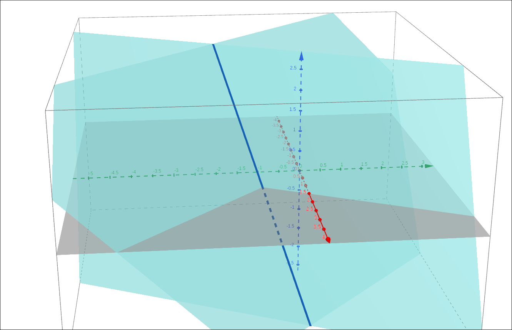
Plane Intersection#
CLAE#
Input the two planes,
x + y + z
2*x - y + z - 3
We will assume that these come in as R1 and R2 respectively. CLAE does not have a tool to automatically find the line of intersection but it cn solve simultaneous equations which is what we need to do. First make a list of the two equations by inputting [R1, R2]. Now select Algebra > Solve, the variables will populate as {x, y, z] which is wat we want, click OK. The result is,
This means,
or a better representation for the line,
To manipulate our result takes only a couple steps. The output from the solve command is something called a “dictionary” which is a common way that solvers display their results. First select Edit > Other Conversions / Extractions > Convert Dictionary Values to List, the result is,
Double-click this last result to load it into the CAS input bar and add a , z at the end of the list (but before the ]). The result is,
Now select Algebra > Evaluate, the variable will be z and in the expression input t and click OK. The result should be,
If we graph the two plane equations and the last vector we will see,
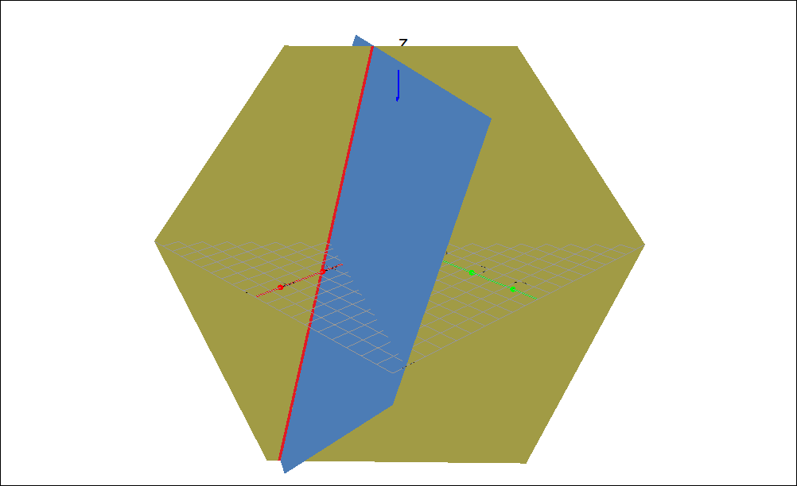
Plane Intersection#
Note
There are other methods for solving simultaneous (linear) equations in several variables that you will study if you take a course in linear algebra. These methods are also built into CLAE.
Distances#
In many applications we need to find the distance from a point to a line or a point to a plane. That is, the shortest distance from a point to a line or plane. We will not go through these derivations here, they are simply applications of projections.
Theorem: Distance from a Point to a Line
Given a line with direction vector \(\mathbf{v}\) and containing a point P. If the point Q is not on the line then the distance from Q to the line is,
Theorem: Distance from a Point to a Plane
Given a plane with normal vector \(\mathbf{n}\) and containing a point P. If the point Q is not on the plane then the distance from Q to the plane is,
If the plane is defined by the equation \(ax+by+cz+d = 0\) and \(Q = (x_0, y_0, z_0)\). The distance from Q to the plane is,